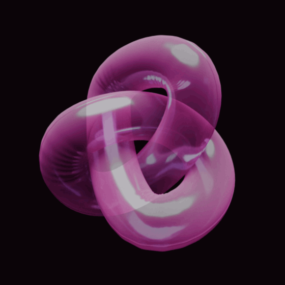

-----------------------------------------------------
Date: 12/10/2024 Title: Please excuse the mess.
-----------------------------------------------------
The throes of creativity tend to be messy and disorganized. At some point you start to think either a.) "Hey, Ive put so much time into this and it's looking pretty good!", or b.) "Hey, I've sunk so much time into this, I need to get something out of it!" and so you want to bring people around and show them the pile of stuff you now have. But it can't just look like a pile of stuff, you need to box some things up, organize, set the context and whatnot. So thats what you're looking at! I mean it's a WIP ofcourse, but this here is that box. I thought up a slick title, bought a domain name, and made all the appropriate social media monikers and now I'm going to document it. And you're here for it, Internet.
-----------------------------------------------------
Date: 12/5/2024 Title: Early Days
-----------------------------------------------------
During the 2019 lockdowns, Kaizen and I decided to make a game. Kaizen was (is) an accomplished backend programmer working for some high-end clients and I was a starving artist fresh out of a pointless master's degree in painting. I had a story and some designs that had been floating around my brain since undergrad and were inspired heavily by CAPCOM. The initial form of the game was that of a Mega Man clone. We began our work using Unreal Engine 4 in a 2.5D platform aesthetic that would allow me to play around with 2D characters in a 3D world. It's been 4 years since and the game is currently simmering at around the prototype phase. In the following DevLog I try to breakdown what we've alreay worked on and describe where the project is currently going.